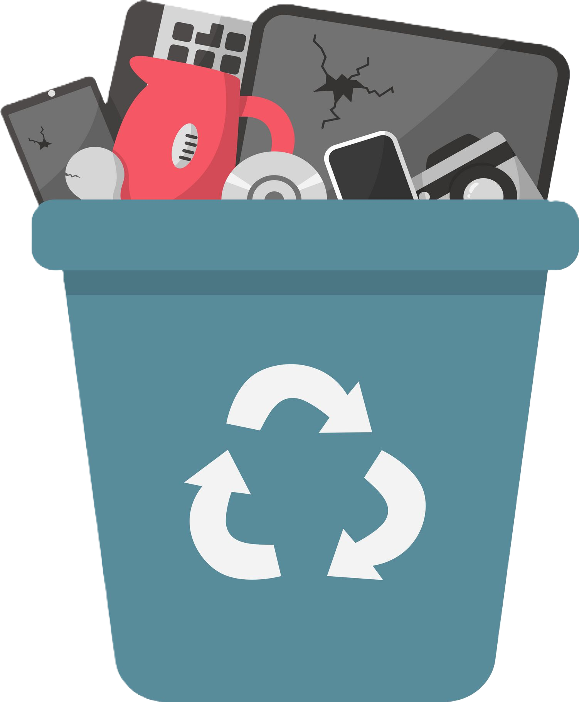
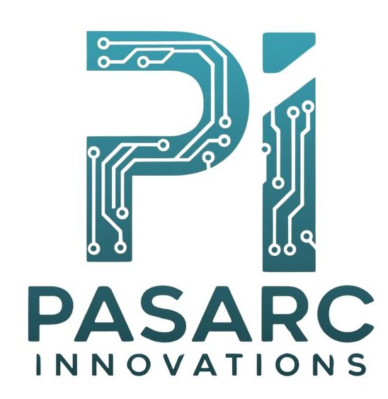

Gestión Integral de Activos Electrónicos e InformáticosComprehensive Management of Electronic and IT Assets
RecepciónReception
Recolección y transporte seguro de sus activos
electrónicos.Secure collection and transport of your electronic assets.
EvaluaciónEvaluation
Análisis exhaustivo del estado y valor de cada equipo.Thorough analysis of the condition and value of each
device.
DisposiciónDisposition
Reutilización, reciclaje o destrucción segura según
requerimientos.Reuse, recycling, or secure destruction depending on
requirements.
Compromiso con el Medio AmbienteCommitment to the Environment
Reciclaje Electrónico:Electronic Recycling:
Aseguramos el reciclaje responsable de todos los materiales.We ensure responsible recycling of all materials.
Economía Circular:Circular Economy:
Promovemos modelos de reutilización y remanufactura.We promote reuse and remanufacturing models.
Cuidado Ambiental:Environmental Care:
Cumplimos con las más altas normas ambientales.We comply with the highest environmental standards.
Reducir, Reusar, ReciclarReduce, Reuse, Recycle
REDUCEREDUCE
Minimización del consumoMinimization of consumption
REUSAREUSE
Recuperación de recursos valiososRecovery of valuable resources
RECICLARECYCLE
Extensión de la vida útilExtension of useful life

Un enfoque integral de gestión de activos debe
basarse en los principios de la economía circular para maximizar el aprovechamiento de los recursos.
A comprehensive asset management approach must be
based on the principles of the circular economy to
maximize resource utilization.
Confianza y Seguridad
Trust and Security
Destrucción de Datos
Data Destruction
Eliminación segura de información confidencial.
Secure deletion of confidential information.
Certificaciones
Certifications
Autorizaciones de entidades regulatorias ambientales.
Authorizations from environmental regulatory agencies.
Cumplimiento Normativo
Regulatory Compliance
Apegados a las normativas legales.
Aligned with legal regulations.
Transparencia
Transparency
Reportes y certificados detallados.
Detailed reports and certificates.
Gama de ServiciosRange of Services
BateríasBatteries
Destrucción y tratamiento especializado para todas las variedades
de baterías.Specialized destruction and treatment for all types of
batteries.
Dispositivos de AlmacenamientoStorage Devices
Nos encargamos de discos duros, SSD y otros medios de
almacenamiento.We handle hard drives, SSDs, and other storage media.
Dispositivos MóvilesMobile Devices
Destrucción segura de smartphones, tabletas y otros dispositivos
portátiles.Secure destruction of smartphones, tablets, and other portable
devices.
ComputadorasComputers
Procesamos todo tipo de equipos como PCs y laptops, así como
servidores.We process all kinds of equipment such as PCs, laptops, and
servers.
PeriféricosPeripherals
Reciclamos una amplia variedad de dispositivos periféricos.We recycle a wide variety of peripheral devices.
Inventarios IndustrialesIndustrial Inventories
Análisis y compra de sobre inventarios del sector industrial y de
manufactura.Analysis and purchase of excess inventory from industrial and
manufacturing sectors.
Tarjetas ElectrónicasElectronic Boards
Destrucción y procesamiento de todo tipo de tarjetas
electrónicas.Destruction and processing of all types of electronic
boards.
En Terra Recycling estamos preparados para recibir,
manejar y procesar una amplia gama de productos
electrónicos e informáticos, diversos tipos de maquinaria
industrial, equipos médicos, baterías y excedentes de
inventario
de la industria manufacturera, ofreciendo gran
flexibilidad y adaptabilidad para cualquier proyecto.
At Terra Recycling, we are prepared to receive,
manage, and process a wide range of products
including electronic and IT equipment, various types of industrial
machinery, medical equipment, batteries, and inventory
surpluses
from the manufacturing industry, offering great
flexibility and adaptability for any project.
Soluciones a la MedidaTailored Solutions
DiagnósticoDiagnosis
Evaluamos el estado y composición de sus activos para determinar la
mejor ruta de disposición.We evaluate the condition and composition of your assets to determine
the best disposal route.
PersonalizaciónCustomization
Diseñamos soluciones a la medida de acuerdo con sus necesidades y
objetivos.We design tailored solutions according to your needs and
objectives.
ImplementaciónImplementation
Ejecutamos la disposición y reciclaje de forma segura y
eficiente.We execute disposal and recycling safely and efficiently.
Beneficios ClaveKey Benefits
Seguridad de Datos:Data Security:
Destrucción segura de informaciónSecure destruction of information
Sostenibilidad:Sustainability:
Economía circular y reducción de impacto ambientalCircular economy and reduced environmental impact
Máximo Valor:Maximum Value:
Recuperación de valor de activosAsset value recovery
Cumplimiento:Compliance:
Regulaciones ambientales y de residuosEnvironmental and waste regulations
¿Por qué elegirnos?Why Choose Us?
Experiencia ProbadaProven Experience
Expertos gestionando activos electrónicos e informáticos.Experts managing electronic and IT assets.
Enfoque IntegralComprehensive Approach
Desde la recepción hasta la disposición final.From reception to final disposal.
Compromiso AmbientalEnvironmental Commitment
Maximizamos la sostenibilidad y el reciclaje.We maximize sustainability and recycling.
Confianza y SeguridadTrust and Security
Garantizamos la protección de datos y el cumplimiento
normativo.We guarantee data protection and regulatory compliance.
Alianzas EstratégicasStrategic Partnerships
Contamos con convenios internacionales para el correcto
procesamiento de cada uno de los materiales.
We have international agreements for the proper processing of each
material.
Contamos con las autorizaciones ambientales y gubernamentales
necesarias para todo tipo de proyecto de reciclaje.
We have the necessary environmental and government authorizations
for all types of recycling projects.
Contamos con el respaldo de nuestra empresa HermanaWe have the support of our Sister Company

Especialistas en reuso tecnológico y recuperación de componentes
dedicada a la clasificación, evaluación y reacondicionamiento de
activos electrónicos e informáticos.
Specialists in technological reuse and component recovery dedicated to
classification, evaluation, and refurbishment of electronic and IT
assets.
ContactoContact
Para consultas, cotizaciones o más información, contáctenos:For inquiries, quotes, or more information, contact us: